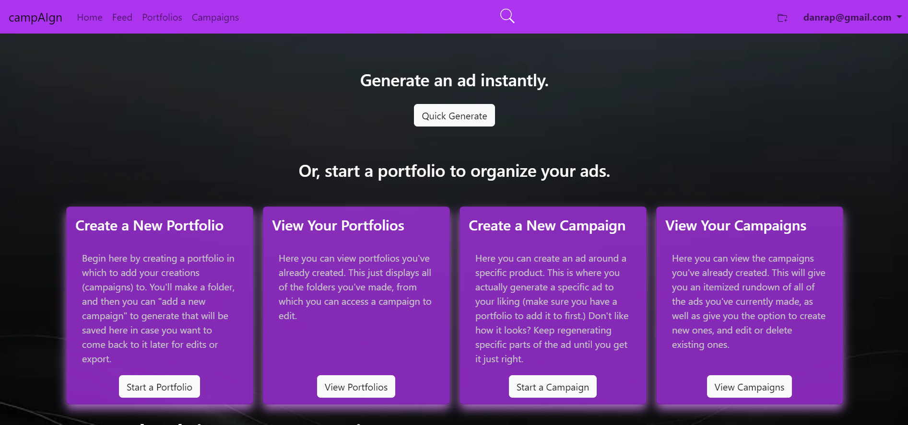
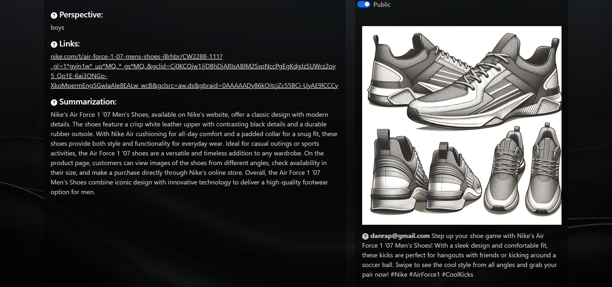
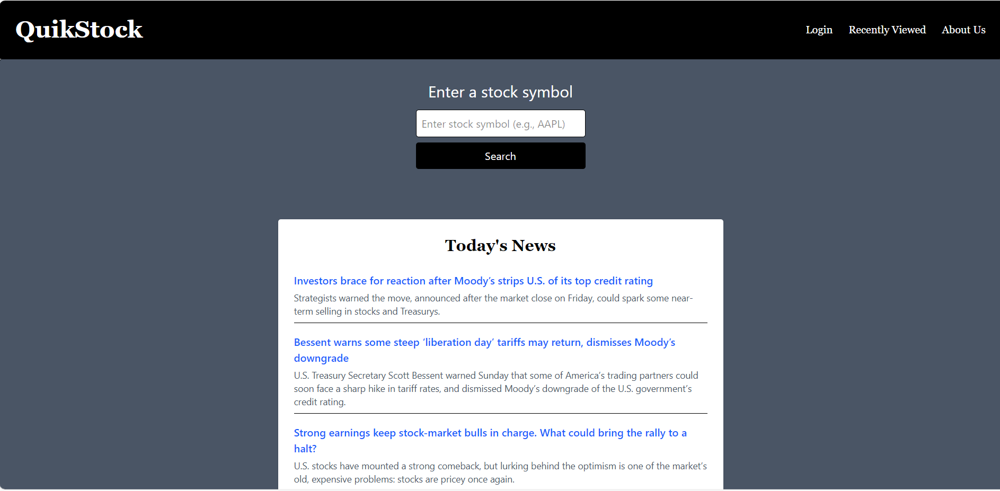
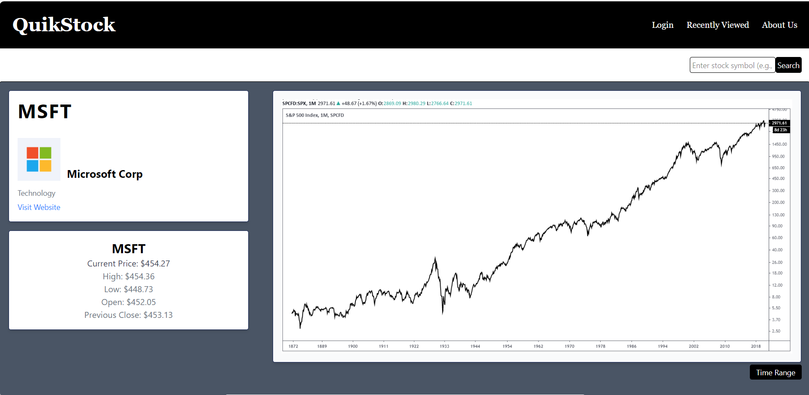
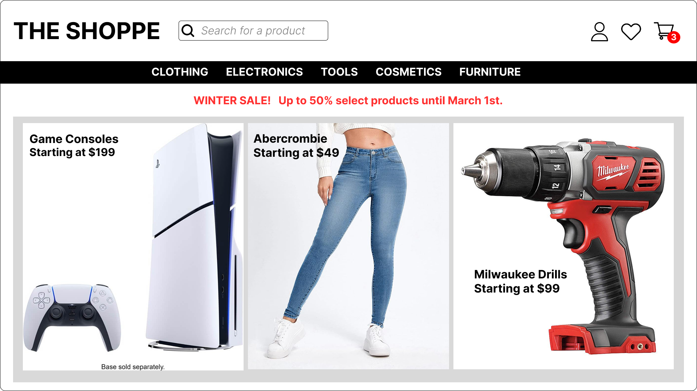
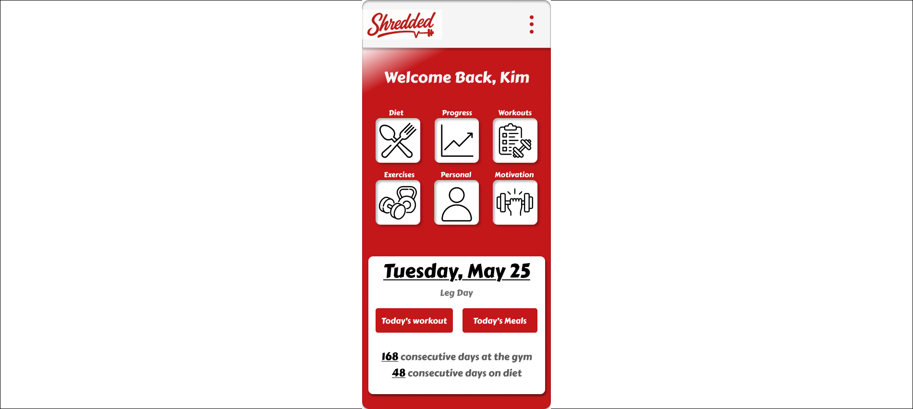
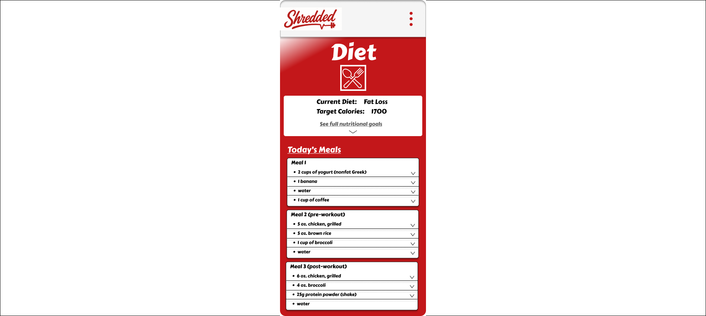

Projects
During my time as a Computer Science major, I worked in multiple groups to create applications.
The following are screenshots from two of those projects. Campaign is accessible through the button below to try out:
Tools Used: Python, HTML/CSS, JavaScript, SQL, Bootstrap, GCP
CampAIgn

A web application we developed for my senior capstone project. It utilizes the OpenAI API to allow users to generate customizable ads for their business based on demographic. The user selects the "perscpective", or tone, of the ad, as well as adds links to other webpages to inform the ad generation. An image and a caption is generated into a social media post format to be exported, and saved in a project file system for later iterations. I primarily worked on the front-end and the overall design and layout, as well as usability testing. But, I did contribute to the back-end routes and functionality, especially post-graduation, in an attempt to reconcile basic usability needs. I have re-deployed the application, and it is accessible below, hosted on Google Cloud Platform.
Go to ApplicationJalapeno Heaven Redesign


Done for a human-computer interaction class, we had a few months to redesign an existing website using UI/UX principles. The whole standard UI design process was followed, including user interviews, testing, wireframing and prototyping. While simplistic, the goal was to update the usability and accessibility of the site, which, when compared to the original, was immensely successful. We updated the entire page flow, added a more visible color pallete (including abiding by accessibility standards.), emphasized the most commonly used features, and overall established a more modern feel to the site. Above is a before and after of the homepage. The source code is below, but given time constraints of the course, was built in a about 2 weeks. Updates are still being made.
View Source CodeA basic applicaiton to look up stock data using the Finnhub API; from wireframing, to usability testing, to functional prototype. It's functionality is limited to a basic searh of a company's stock info, due to limitations of Finnhub's free tier. My goal was not create a detailed applicaiton, but to show my ability to create a functional prototype and to show my design process. That, I am able to not only design a product itteratively through user feedback, but also program the front-end, and back-end using API requests. Given the limited functionality and pages, I have not deployed this application anywhere. Until I can add more functinality, thes following screenshots represent entirely what the application can do.
Tools Used: Figma, Tailwind, React, Finnhub API
Landing Page Wireframe

A wireframe of the landing page of the application.
Search Result Wireframe

A wireframe of the data result page of the application
Landing Page
The landing page of the prototype. The sole purpose of this applicaiton is to look up a stock, therefore the design should reflect that simplicity and minimalism. A single search bar is provided to the user, along with a search button. Beneath is a brief news feed of market news, and above is a navigation bar, of which one of the options is to view recently searched/ saved stocks to future access. The goal is to add this functionality next.
Search Result Page
The data result page of the prototype. Post-search, a user receives key information about their company's stock. Additionally, a chart is provided to visualize the stock's performance, with a dropdown that allows the user to select a time frame. These seperate sections are delineated by cards on a contrasted background for visibility and clarity. Once again, the design is minimalistic, serving the purrpose of the prototype."
Pages designed in Figma for a fictional shopping website including a homepage and a products page. The goal was to create a clean looking site built around established online retail design patterns, while also trying to improve upon them. Many online retail sites have poor delineation between page elements, or poor signposting of certain functions. I tried to emphasize contrast, hence the monochrome color pallete. This is an ongoing design I intend to itterate on and add to to better exemplify this.
Landing Page
The landing page of the site. Here the user is greeted with banner ads to promote certain products or sales. They are also immediatley provided with options to search for products directly in the search bar, or browse by category. Additionally, users may access their account, cart, or wishlist.
Clothing Search

Showcasing what a search would look like having gone through the clothing category, the user is able to navigate through a filter of options. In this case they are viewing pairs of pants, being filtered by price by ascending order. A breadcrumb is also provided to assist the user in navigation to previous pages.
Pages designed for a fictional fitness app. I tried to emphasis clustering and grouping of elements, while prioritizing and distilling down the most important features, making them easily accessible. This is an ongoing design, and therefore the prototype only includes two pages, without any functionality. The goal is to continue to implement all pages, their interactivity, and imporove on UI/UX principles and style.
View PrototypeHome Page
The landing page of the app. Here, the user is greeted with all features categorized into thier own respective buttons which bring the user to the respective page. Common iconography is used, and is repeated on the following page for consistency and easy recognition. At the bottom of the page is a brief description of the current work that day, as well as snippets of user's fitness accomplishments to bolster motivation upon opening the app.
Diet Page
This page showcases a diet plan for the user, with a listing of that current days meals, and each item's nutritional information which can be acccessed by a dropdown menu. Immediate information about thier chosen diet plan is provided at the top, along with the amount of calories needed for the day predicated on the selected diet. The design emphasizes clarity and ease of use, allowing users to focus on their fitness goals.